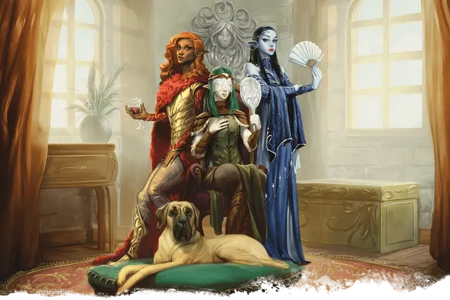

Карга Мерзкого Взора
Hag of the Fetid Gaze
Средняя Фея, нейтрально-злая

Класс Доспеха 17 (природный доспех)
Хиты 82 (11к8 + 33)
Скорость 30 футов
| мод | спас | ||
|---|---|---|---|
| СИЛ | 18 | +4 | +4 |
| ЛОВ | 12 | +1 | +1 |
| ТЕЛ | 16 | +3 | +3 |
| мод | спас | ||
|---|---|---|---|
| ИНТ | 13 | +1 | +1 |
| МДР | 14 | +2 | +2 |
| ХАР | 14 | +2 | +2 |
Навыки Восприятие +4, Магия +3, Обман +4, Скрытность +3
Чувства тёмное зрение 60 футов, пассивное Восприятие 14
Языки Общий, Драконий, Сильван
Опасность 5 (1800 опыта)
Бонус мастерства +3
Особенности
Амфибия. Карга может дышать и воздухом, и под водой.
Врождённое колдовство. Базовой характеристикой карги является Харизма (Сл спасброска от заклинания 12). Она может накладывать следующие заклинания, не нуждаясь в материальных компонентах:
• Неограниченно: злая насмешка, малая иллюзия, пляшущие огоньки
Подражание. Карга может подражать звукам животных и голосам гуманоидов. Существо, слышащее эти звуки, может понять, что это подражание, если совершит успешную проверку Мудрости (Проницательность) Сл 14.
Совместное колдовство. Если все три представительницы шабаша находятся в пределах 30 футов друг от друга, каждая может накладывать следующие заклинания из списка волшебника, но ячейки заклинаний у них общие на всех.
• 1-й уровень (4 ячейки): очарование личности [charm person], ведьмин снаряд [witch bolt]
• 2-й уровень (3 ячейки): смена обличья [alter self], внушение [suggestion]
• 3-й уровень (3 ячейки): рассеивание магии [dispel magic], охранные руны [glyph of warding], замедление [slow]
• 4-й уровень (3 ячейки): усыхание [blight], превращение [polymorph]
• 5-й уровень (2 ячейки): подчинение личности [dominate person], притворство [seeming]
• 6-й уровень (1 ячейка): неудержимая пляска Отто [Otto’s irresistible dance]
При накладывании этих заклинаний каждая карга считается заклинателем 12-го уровня, использующим Интеллект в качестве базовой характеристики. Сл спасброска от заклинаний равна 12 + модификатор Интеллекта карги, а бонус атаки заклинанием равен 4 + модификатор Интеллекта.
Ужасная Моргана. В своей истинной форме нейтрально-злая Ужасная Моргана выглядит как худое бледное существо, чьи длинные спутанные чёрные волосы украшены орнаментами, вырезанными из костей и зубов. Ее рот неестественно высоко изгибается в уголках, а ее кроваво-красные губы покрыты волдырями и нарывами.
В замаскированной форме ведьма выглядит как Морганна, стройная лунная эльфийка с гладкими чёрными волосами и сверкающими сапфировыми глазами. Она говорит хриплым соблазнительным голосом и занимается управлением купальней.
Ужасная Моргана знает ритуал, необходимый для связывания желания существа с проклятой картиной. Желание записывается на крошечном свитке и прячется в костяном орнаменте в ее волосах.
Черта характера. «Я превращаю тонкие оскорбления в искусство».
Идеал. «Любое животное может кого-то напугать. По-настоящему напугать кого-то — высокое искусство».
Привязанность. «Я сделаю всё, чтобы взять верх над другими членами моего шабаша и заставить их служить мне».
Слабость. «Я нахожу сильные, устрашающие личности неотразимыми».
Мерзкая Сажа. Без маскировки хаотично-злая Мерзкая Сажа выглядит как сгорбленная фигура с одной мускулистой и одной иссохшей рукой. У неё кошачьи глаза, и ржаво-рыжие волосы покрывают её голову, спину и руки. Из-за острых клыков она говорит неразборчиво, а когда ей угрожают, она шипит и визжит.
В замаскированной форме она появляется как Азирсса, подтянутая солнечная эльфийка с медными волосами, которая носит украшенный нагрудник с красной меховой мантией. У неё уверенный и веселый голос, и она ценит физическую силу и крепкое здоровье.
Мерзкая Сажа создает для проклятых картин подходящие холсты. Этот секрет вытатуирован на ее иссохшей руке на Инфернальном языке и описывает жуткий процесс натягивания эльфийской плоти на раму, сделанную из пропитанного кровью дерева.
Черта характера. «Я презираю слабых и люблю причинять физическую боль и насилие, когда мне это сходит с рук».
Идеал. «Сила - единственное, что стоит уважать».
Привязанность. «Когда-то давно дварфы сожгли мой дом и убили мою дочь, и я всегда буду ненавидеть их всех».
Слабость. «Я боюсь огня».
Тетушка Зеленые Кости. Старший член Мерзкого Взора, законно-злая Тётушка Зелёные Кости, часто доверяет принятие решений двум другим ведьмам. В своей истинной форме она сморщенная и истощенная, её тёмно-зелёная кожа покрыта корой и грибком.
Насекомые ползают по ней и прячутся в густой косе белых волос, вьющейся у неё на плечах, как змея. Любой, кто смотрит в ее молочно-белые, казалось бы, слепые глаза, видит отражение своего собственного лица, дряхлого и увядшего от возраста.
Ведьма маскируется под Зелёную Песню, весёлую розовощекую лесную эльфийку, притворяющуюся слепой. Она закрывает глаза тонкой белой вуалью и говорит певучим голосом, часто хихикая. Она всегда держит с собой сторожевую собаку Морти. Эта замаскированная адская гончая выглядит как мастиф с налитыми кровью глазами.
Тётушка Зелёные Кости знает, как добавить ихор демона в краски, необходимые для создания проклятых картин, на которых шабаш совершает злые сделки. Этот рецепт написан на внутренней стороне ошейника Морти.
Черта характера. «Иногда я пою про себя, когда отвлекаюсь. Это старая фейская песня о дочери, которую предал отец и в исполнение договора отдал злым феям».
Идеал. «Терпение - ключ к выживанию. Дольше всех смеётся та, кто смеётся последней».
Привязанность. «Моя любимая собака Морти — это мой мир. Если бы кто-нибудь причинил ей вред, я бы охотилась за этим человеком на всех планах, если бы это было необходимо».
Слабость. «Чистосердечные буквально вызывают у меня рвоту. Я имею в виду — в их присутствии у меня живот пучит».
Действия
Когти. Рукопашная атака оружием: +6 к попаданию, досягаемость 5 футов, одна цель. Попадание: Рубящий урон 13 (2к8 + 4).
Иллюзорная внешность. Карга покрывает себя и все, что несет и носит, магической иллюзией, заставляющей её выглядеть как другое существо примерно её размера и с гуманоидным телом. Иллюзия оканчивается, если карга умирает, и карга может окончить её бонусным действием.
Изменения, внесенные эти эффектом, не проходят физическую проверку. Например, кожа карги может выглядеть гладкой, но тот, кто её коснется, почувствует морщины. Если же полагаться только на зрение, то существо должно действием совершить проверку Интеллекта (Расследование) Сл 20 и преуспеть, чтобы понять, что была использована иллюзия.
Невидимая ходьба. Карга магическим образом становится невидимой, пока не атакует, или не наложит заклинание, либо пока не прервет концентрацию (как при концентрации на заклинании). Будучи невидимой, она не оставляет физических следов, так что выследить её можно только с помощью магии. Все снаряжение, которое она несет и носит, становится невидимым вместе с ней.
Описание
Три зелёных карги по имени Ужасная Моргана, Мерзкая Сажа и Тетушка Зелёные Кости когда-то были соперницами, жившими в Царстве Фей, неподалеку от Высокого Леса. Десять лет назад, когда границы между планами истончились, ведьмы узнали о волшебном источнике, контролируемом Сильвари, и решили захватить его и использовать в собственных целях. Каждая из алчных ведьм знала часть ритуала создания волшебных картин, которые могли связывать смертные существа ужасным проклятием. Согласившись поделиться своими знаниями и работать вместе, они сформировали шабаш ради захвата храма Сильвари и превращения его в базу осуществления их гнусных планов.
Ведьмы используют силу магии иллюзий, чтобы изображать из себя трех сестёр-эльфиек - Морганну, Азирссу и Зелёную Песню. Обычно их можно найти в купальне днём и в логове в башне ночью. У каждой ведьмы есть универсальный ключ от всех дверей купальни и башни.
Гнусные и злобные зелёные карги живут в умирающих лесах, на безлюдных болотах и туманных топях, устраивая логова в пещерах. Зелёные ведьмы любят манипулировать людьми, скрывая намерения за слоями лжи. Они заманивают жертв, имитируя голоса и прося о помощи, отваживая нежеланных гостей криками диких зверей.
Одержимость печалью. Зеленые карги пируют на печали и трагедиях других. Они ликуют, когда надежда оборачивается отчаяньем не только для одного существа, но и для целых народов.